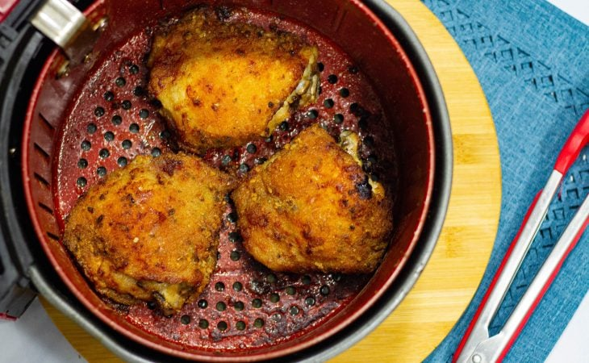
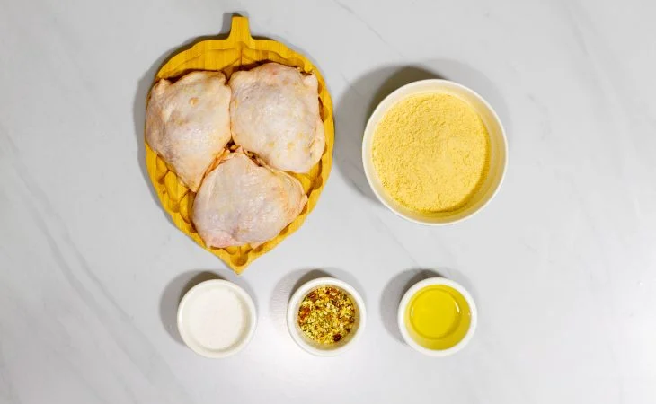
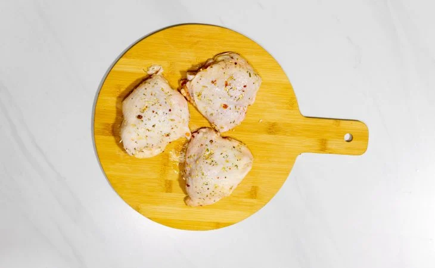
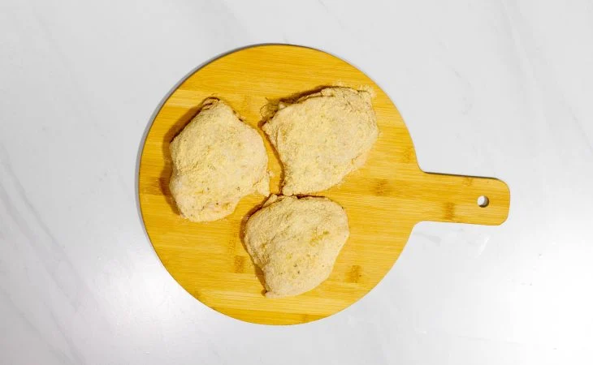
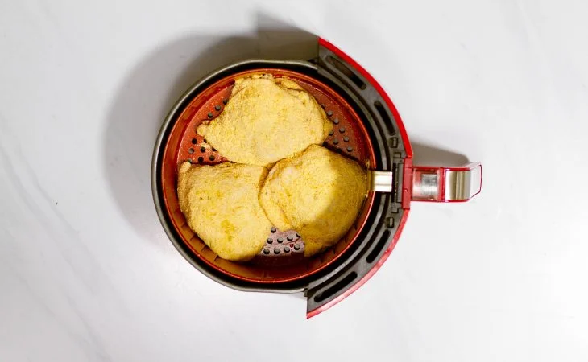
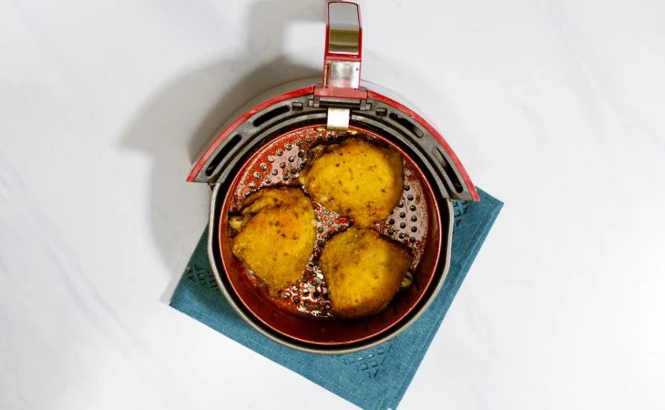
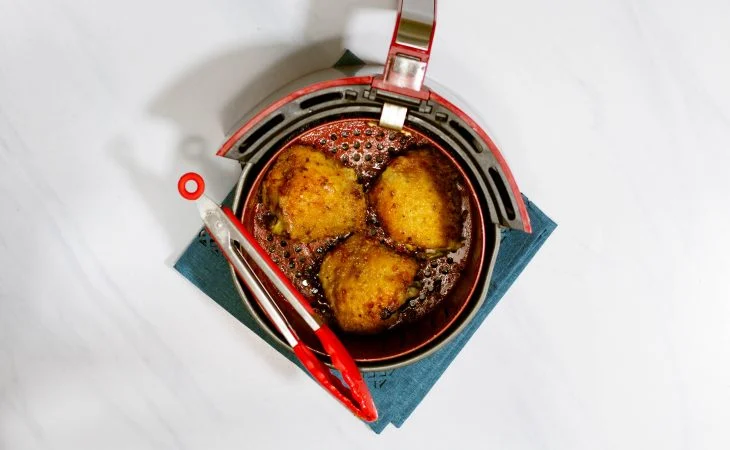

57 receitas com frango que são deliciosas e fáceis de preparar
42 receitas com peito de frango práticas e irresistíveis
32 receitas de filé de frango para variar o cardápio do dia a dia
10 receitas de fricassê de frango cremoso que fazem sucesso na mesa

Sobrecoxa na airfryer
Ingredientes
Modo de preparo

Reúna todos os ingredientes da massa;

Em um recipiente, tempere o frango com sal grosso, chimichurri e azeite. Reserve por 5 minutos;

Passe as sobrecoxas na farinha de rosca, certificando-se que ela cubra toda a carne;

Acomode as sobrecoxas na airfryer preaquecida a 180 ºC, com a pele virada para baixo e o osso para cima, e cozinhe por 20 minutos;

Vire as sobrecoxas, cozinhe por mais 5 minutos a 200 ºC, vire novamente depois do tempo e deixe mais 5 minutos;

Está pronto. Sirva e aproveite!
 57 receitas com frango que são deliciosas e fáceis de preparar
57 receitas com frango que são deliciosas e fáceis de preparar
 42 receitas com peito de frango práticas e irresistíveis
42 receitas com peito de frango práticas e irresistíveis
 32 receitas de filé de frango para variar o cardápio do dia a dia
32 receitas de filé de frango para variar o cardápio do dia a dia
 10 receitas de fricassê de frango cremoso que fazem sucesso na mesa
10 receitas de fricassê de frango cremoso que fazem sucesso na mesa